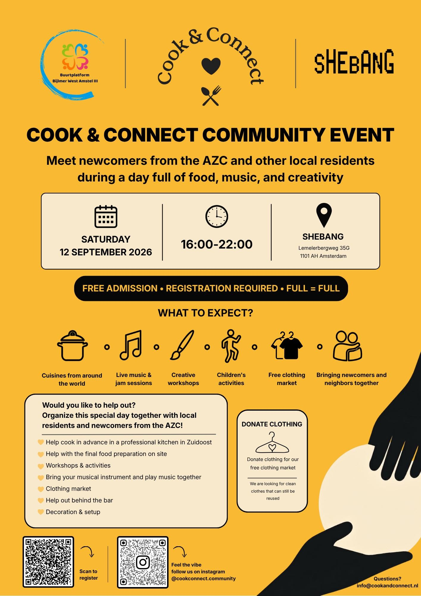

Cook & Connect Community Event
On Saturday, 12 September 2026, Cook & Connect will bring together people from the neighbourhood and residents of the local refugee centre for a free event filled with food, music and creativity.
We will share dishes from different cultures, make music together and enjoy creative activities, a children’s corner, a storytelling corner and a free clothing market. You are welcome to simply come and enjoy the event, but you can also volunteer, donate clothes or join the jam session.
Date: Saturday, 12 September 2026
Time: 4:00 PM – 10:00 PM
Location: Shebang, Lemelerbergweg 35G, Amsterdam-Zuidoost
Admission: Free
Places are limited. Scan the QR code below or open the registration form.

We look forward to meeting you!